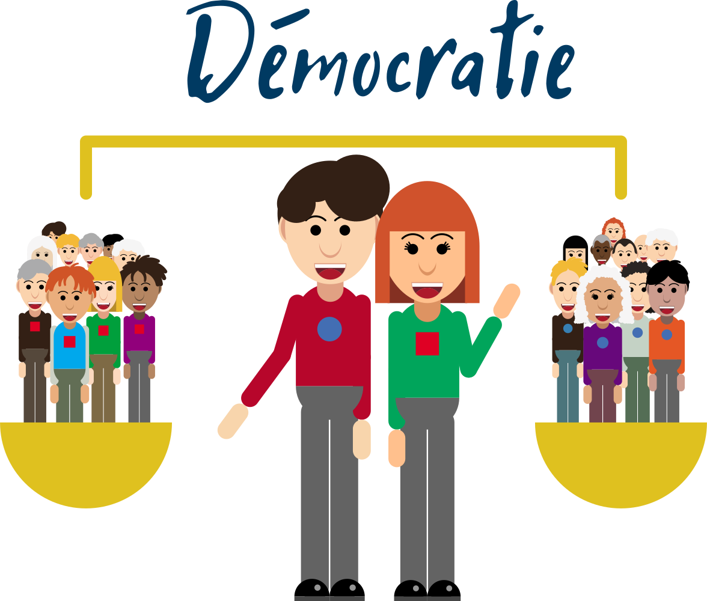
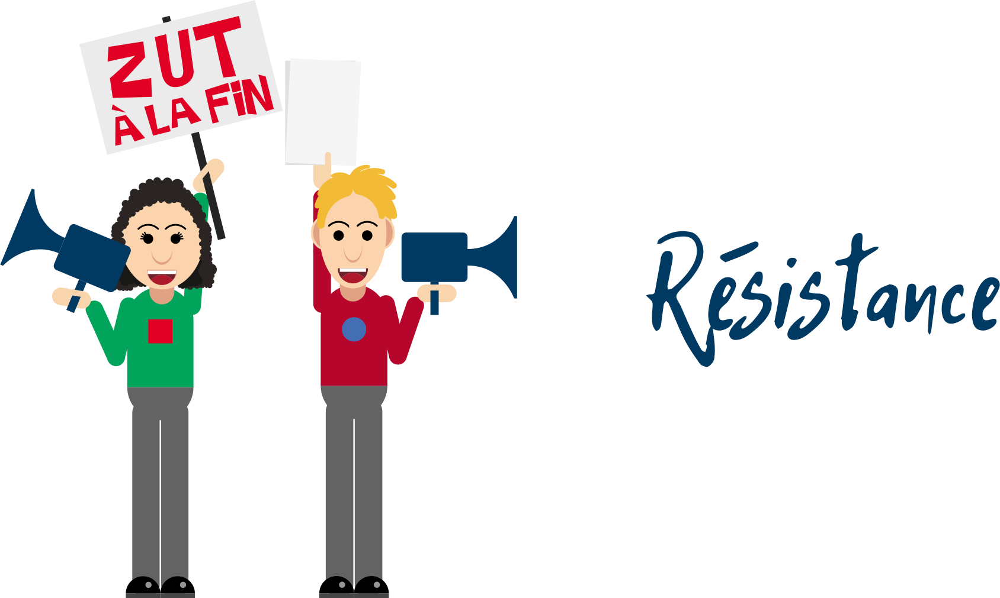
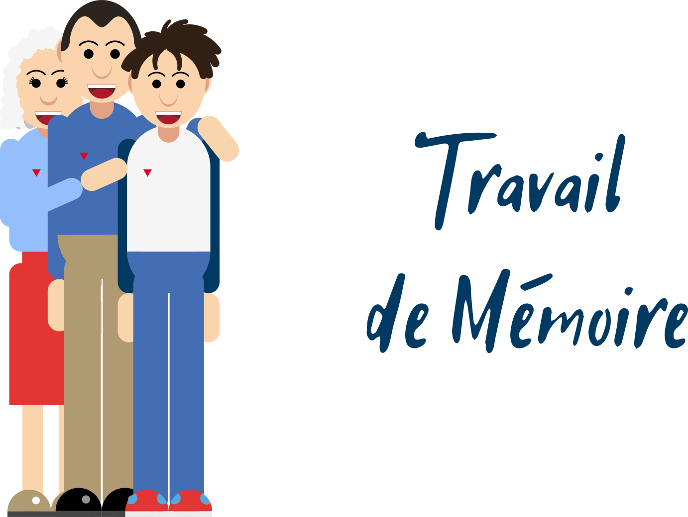
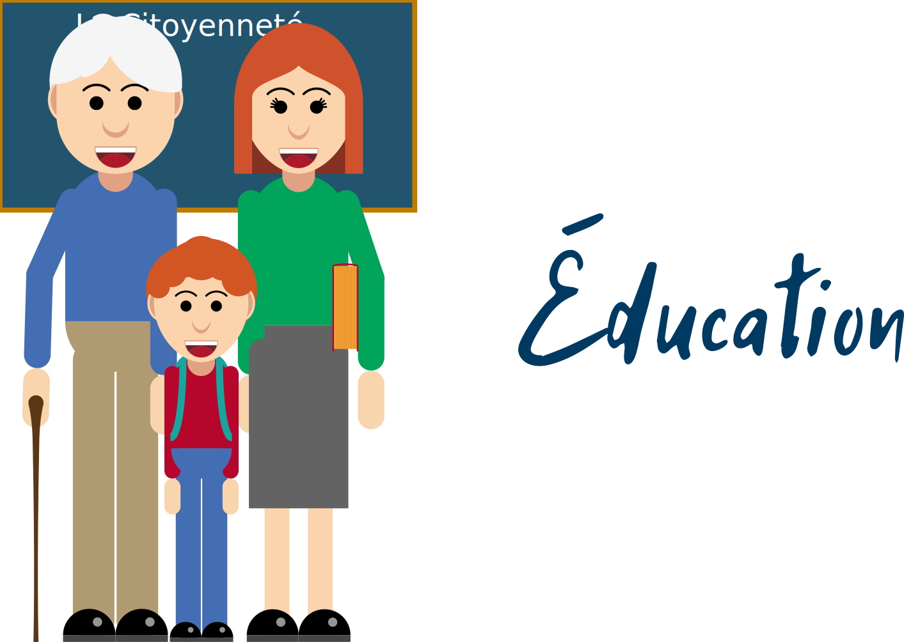

Le parcours
Boucle de +/- 4 km
Le trajet contient 6 Points Of Interest ou POI
Départ/Arrivée
À la Maison communale d’Oreye
(rue de la Westrée 9 à 4360 Oreye).
Instructions
La carte

Les questions
1. Maison Communale
Aujourd’hui, dans le monde, les enfants ont-ils les mêmes droits ?
- Ça dépend de la situation
- Non
- Oui, en théorie
En théorie, oui mais en pratique, non. Tous les pays du monde ont signé et ratifié la Convention relative aux droits de l’enfant (à l’exception des États-Unis), mais dans les faits tous ne garantissent pas l’application de ces droits. Si les exemples les plus connus nous paraissent éloignés car concernant des pays où les droits humains ne sont de manière générale pas ou peu respectés nous, des exemples géographiquement plus proches existent également.
Ainsi, en Belgique et dans d’autres pays européens, des enfants souffrent de pauvreté ou encore sont enfermés dans des centres fermés dans le cas de familles migrantes en situation irrégulière. Sur la carte ci-dessous, les pays en noir sont ceux dont la situation est jugée “très grave” selon l’ONG Humanium.
https://www.humanium.org/fr/carte-respect-droits-enfant-monde/
2. Chapelle Saint-Eloi
Laquelle de ces chansons est une chanson de résistance ?
- « Bella Ciao »
- « Papaoutai »
- « Mistral Gagnant »
« Bella ciao » est un chant de résistance italien qui aurait vu le jour durant la Seconde Guerre mondiale. Reprenant l’ère d’une chanson paysanne, ce chant célèbre l’engagement des partisans et partisanes contre le fascisme de Mussolini. Il est depuis devenu un hymne à la résistance connu dans de nombreux pays et a été repris par de nombreux artistes, qui en ont parfois modifié le sens ou la portée.
3. Château d’Otrange
Qu’est-ce qu’un ou une « Passeur de Mémoire » selon vous ?
- Une personne qui transmet ses connaissances sur le passé pour mieux comprendre le présent et préparer l’avenir
- Une personne qui connaît tous les détails des guerres
- Une personne qui collectionne des objets anciens
En prêtant attention aux évènements du passé afin de comprendre comment ceux-ci ont eu lieu, les enfants et les jeunes d’aujourd’hui deviendront ainsi des « Passeurs de mémoire ». Même si les enfants d’aujourd’hui n’ont pas connu cette époque, ils et elles pourront être plus conscients et conscientes face aux possibles dangers de l’installation au pouvoir d’un parti liberticide.
Si l’Histoire ne se répète jamais de la même façon, certains mécanismes peuvent quant à eux être récurrents et présenter un risque pour les valeurs démocratiques : l’attrait d’un leader fort en période de crise, la mise en place d’un duo censure-propagande qui éloigne la population de la pratique de l’esprit critique ou encore la mise en place de mesures exceptionnelles restreignant les libertés sans limites temporelles définies ou conditions particulières justifiant celles-ci.
4. Bibliothèque
Tout le monde a le droit de s’exprimer librement. Existe-t-il cependant des limites à ce que l’on peut ou ne peut pas dire ?
- Non, il n’y a pas de limites légales à notre liberté d’expression
- Oui, il est interdit de tenir des propos racistes incitant à la haine
- Oui, il est interdit de parler de sa vie privée dans l’espace public
La loi belge interdit les propos racistes, xénophobes (qui sont hostiles aux personnes d’origine étrangère), discriminatoires (qui opèrent une différenciation préjudiciable entre personnes ou groupes humains), négationnistes (qui la réalité des génocides reconnus par un tribunal international), diffamatoires (qui nuisent à quelqu’un(e) sans justification) ou injurieux.
5. Ecole communale
Dans un idéal démocratique, l’école c’est fait pour :
- Qu’on pense tous et toutes la même chose
- Qu’on apprécie mieux les vacances
- Mieux comprendre et agir sur le monde qui nous entoure
L’école est l’endroit où on apprend différentes matières, où l’on reçoit des outils variés pour mieux comprendre les différents phénomènes qui nous entourent, que leur origine soit naturelle ou humaine.
Un pouvoir totalitaire ou autoritaire aura tendance à faire de l’école un lieu où tous les élèves sont éduqués pour obéir au pouvoir en place, en étouffant leur curiosité et en leur empêchant d’exercer leur esprit critique.